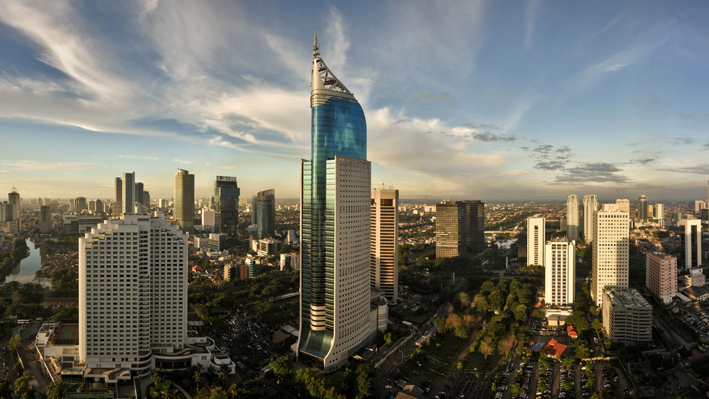
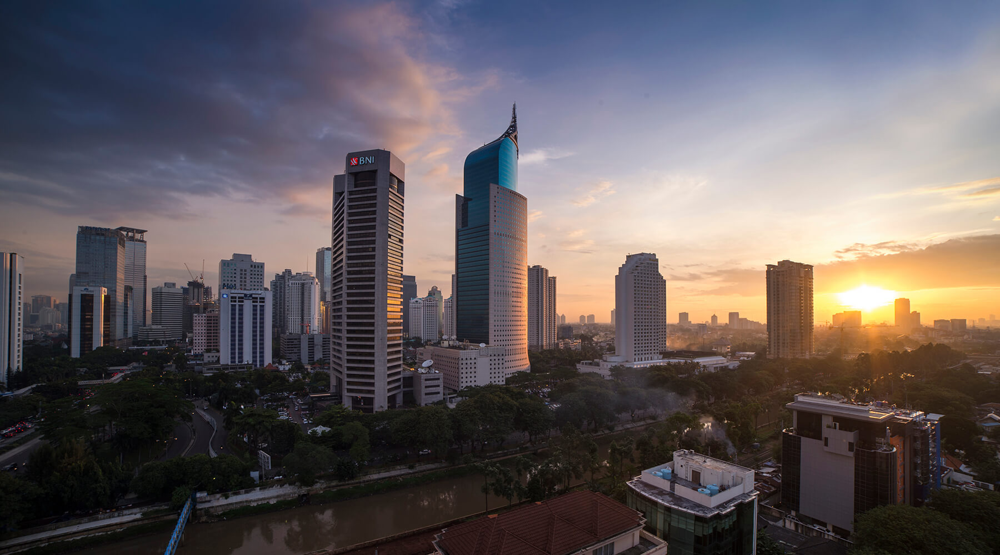
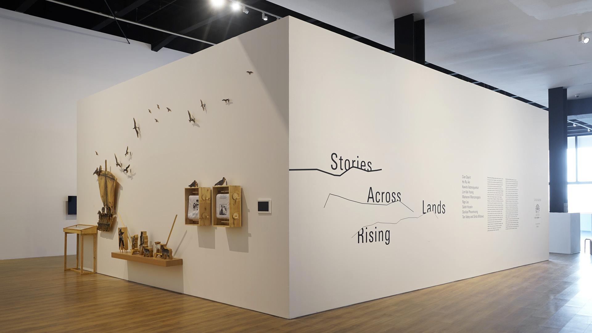
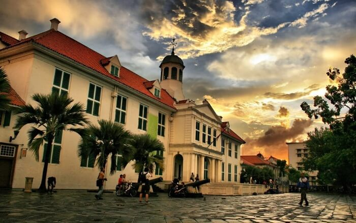
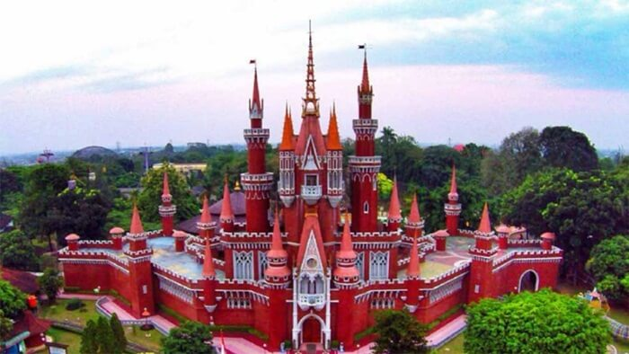
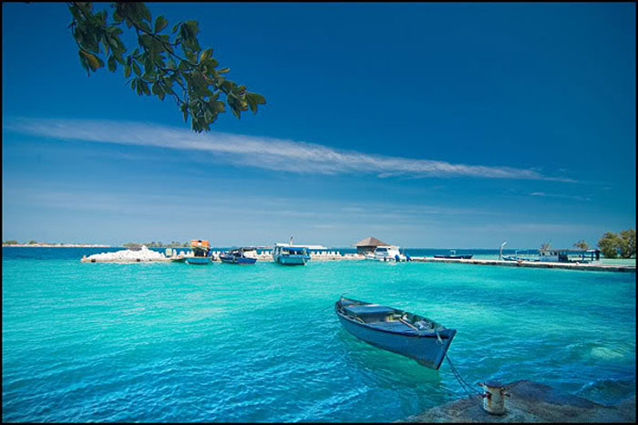

DKI Jakarta merupakan ibu kota Republik Indonesia yang sekaligus menjadi pusat kegiatan
ekonomi nasional, politik, dan kebudayaan.
Sejarah

Jakarta indonesia adalah ibu kota dan kota terbesar Indonesia. Terletak di estuari Sungai Ciliwung, di bagian barat laut Jawa,
daerah ini telah lama menopang pemukiman manusia. Bukti bersejarah dari Jakarta berasal dari abad ke-4 M, saat ia merupakan sebuah permukiman dan pelabuhan Hindu.
Kota ini telah diklaim secara berurutan oleh kerajaan bercorak India Tarumanegara, Kerajaan Sunda Hindu, Kesultanan Banten Muslim, dan oleh pemerintahan Belanda, Jepang, dan Indonesia.
Hindia Belanda membangun daerah tersebut sebelum direbut oleh Kekaisaran Jepang semasa Perang Dunia II dan akhirnya menjadi merdeka sebagai bagian dari Indonesia.
Geografis

Provinsi DKI Jakarta mempunyai luas daratan 661,52 km2 dan lautan seluas 6.977,5 km2 serta tercatat ±110 pulau yang tersebar di Kepulauan Seribu. Secara administrasi,
Provinsi DKI Jakarta terbagi menjadi 5 wilayah Kotamadya dan 1 Kabupaten Administrasi yaitu Jakarta Pusat dengan luas daratan 47,90 km2; Jakarta Utara dengan luas
daratan 154,01 km2, Jakarta Barat dengan luas daratan 126,15 km2; Jakarta Selatan dengan luas daratan 145,73 km2; Jakarta Timur dengan luas daratan 187,73 km2 dan
Kabupaten Adm. Kepulauan Seribu.
Jumlah penduduk Provinsi DKI Jakarta 9,041 juta jiwa dengan kepadatan penduduk 13.667,01 jiwa per km2. Jakarta beriklim tropis, dengan suhu tahunan rata-rata 27°C
dengan kelembaban 80-90%. Karena terletak di dekat garis khatulistiwa, arah angin dipengaruhi oleh angin musim. Angin musim barat bertiup antara November dan April,
sedang angin musim timur antara Mei dan Oktober. Curah hujan rata-rata 2.000 mm, curah hujan paling besar sekitar bulan Januari dan paling kecil pada bulan September.
Kondisi Umum Kota Jakarta:
Jakarta, dengan luas kota: 661,52 Km2, terletak di antara 60 8′ Lintang Selatan dan 106 0 48′ Bujur Timur.
Sebelah barat berbatasan dengan Propinsi Banten dan sebelah timur dan selatan berbatasan dengan Propinsi Jawa Barat. Di sebelah utaranya berbatasan dengan laut Jawa.
Beberapa bagian wilayahnya berada di bawah permukaan laut.
Secara umum beriklim tropis dengan suhu rata-rata antara 28 – 310 C.
Jumlah penduduk kurang-lebih 11 juta pada siang hari, dan 8 juta pada siang hari, dengan kepadatan rata-rata 16.500 jiwa/Km2.
Panjang jalan kira-kira mencapai 6.400-an meter, dimana baru kurang lebih setengahnya yang dilalui jaringan pipa air minum PDAM.
Dilintasi oleh 13 kali, besar dan kecil, di antaranya kali Ciliwung, Kali Malang, Kali Cideng, Kali Krukut.
Terdapat sarana telekomunikasi umum, seperti telepon umum, yang sebagian besar diantaranya tidak berfungsi/rusak.
Merupakan ibukota negara yang sekaligus berfungsi sebagai pusat pemerintahan.
Dibagi ke dalam 5 (lima) wilayah kotamadya, 43 kecamatan dan 267 kelurahan.
Wisata
Di balik image ibukota negara yang sibuk dan padat dengan deretan gedung pencakar langit serta jalanannya yang macet. Jakarta nyatanya juga menyuguhkan
pesona wisata tak kalah menarik untuk dikunjungi dan dijelajahi. Bahkan di sela-sela hiruk-pikuknya Jakarta, ada begitu banyak ragam pilihan destinasi
tempat wisata di Jakarta yang bisa dikunjungi. Mulai dari wisata keluarga yang ramah anak, wisata kuliner, wisata sejarah dan seni hingga wisata anti
mainstream ada di Jakarta.
Museum Macan

Jakarta indonesia adalah ibu kota dan kota terbesar Indonesia. Terletak di estuari Sungai Ciliwung, di bagian barat laut Jawa,
daerah ini telah lama menopang pemukiman manusia. Bukti bersejarah dari Jakarta berasal dari abad ke-4 M, saat ia merupakan sebuah permukiman dan pelabuhan Hindu.
Kota ini telah diklaim secara berurutan oleh kerajaan bercorak India Tarumanegara, Kerajaan Sunda Hindu, Kesultanan Banten Muslim, dan oleh pemerintahan Belanda, Jepang, dan Indonesia.
Hindia Belanda membangun daerah tersebut sebelum direbut oleh Kekaisaran Jepang semasa Perang Dunia II dan akhirnya menjadi merdeka sebagai bagian dari Indonesia.
Kota Tua

Pusat kota Batavia tua adalah Municipal Hall, yang dikenal sebagai Stadhuis, tepat di belakang plaza yang terbilang besar bernama Stadhiusplein, yang memiliki air mancur di
tengahnya yang berfungsi menyuplai air ke gedung-gedung sekitar. Ke arah barat, Anda akan menemukan Museum Wayang yang pernah dimiliki oleh sebuah perusahaan besar milik Belanda, Geo Wehry
Taman Mini Indonesia Indah

Taman Mini Indonesia Indah (TMII) adalah sebuah arena pendidikan merangkap rekreasi di Jakarta. Diprakarsai oleh Ibu Tien Soeharto, mantan Ibu Negara Indonesia pada masa itu, TMII merupakan sebuah
taman yang amat luas yang diisi oleh sejumlah museum, diantaranya museum yang menyimpan barang-barang pemberian para kepala negara dunia yang berkunjung ke Indonesia, Museum Indonesia, Museum Asmat,
serta Museum Filateli.
Taman Impian Jaya Ancol
Taman Impian Jaya Ancol adalah taman rekreasi tematik terbesar dan terlengkap di Jakarta. Terletak di Jakarta Utara berhadapan dengan Laut Jawa, Taman Impian Jaya Ancol merupakan kawasan resor tepi pantai yang berdiri di atas
lahan seluas 80 hektar. Ini adalah sebuah taman rekreasi yang menyediakan berbagai fasilitas, mulai dari olahraga air dan pantai, wahana seru, kolam renang, hingga Eco-Park dan pertunjukan spertakuler bertabur bintang kaliber internasional.
Pulau Kelapa

Pulau Kelapa menjadi tempat menarik dan menyenangkan di Jakarta yang rekomended untuk anda kunjungi bersama teman maupun keluarga. Jenuh dengan suasana kantor maupun kehidupan perkotaan jakarta yang membisingkan bisa anda refresh di Pulau Kelapa.
Destinasi wisata Pulau Kelapa berada di kawasan Kepulauan Seribu Jakarta yang menawarkan pesona keindahan alam yang mempesona. Kepulauan Seribu menyajikan wisata bahari dengan fasilitas dan spot berlibur yang akan membawa wisatawan merasakan kualitas berlibur.
Pantai-pantai indah dengan resort-resot mewah sangat rekomended untuk dikunjungi. Apalagi jika anda pasangan yang baru menikah, destinasi wisata Pulau Kelapa bisa menjadi tempat untuk bulan madu yang romantis untuk dikunjungi.